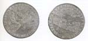

OOSTENDE VERLOREN, SLUIS GEWONNEN, 1604
Tentoonstelling in de Universiteitsbibliotheek van 12 augustus - 12
september 2004
Samenstelling: Dirk de Vries
Met bijdragen van Charles van den Heuvel, Anton van der Lem en Piet Lombaerde
Woord vooraf
In 2002 nam Dirk de Vries afscheid van de bibliotheek van de Universiteit Leiden, waar hij 31 jaar als conservator van de Collectie Bodel Nijenhuis had gewerkt, en keerde naar zijn geboortegrond Zeeuwsch-Vlaanderen terug. Direct kwam hij met het idee om aandacht te besteden aan het feit dat het in 2004 vierhonderd jaar geleden is dat Sluis werd belegerd en ingenomen. De tentoonstelling Oostende verloren, Sluis gewonnen 1604 is hiervan het resultaat. De titel verraadt de historische achtergrond van Dirk de Vries, die het beleg van Sluis niet als een op zichzelf staand incident heeft willen tonen, maar deze gebeurtenis plaatst in de context van de Tocht door Vlaanderen en de overgave van Oostende na het driejarig beleg door de Spanjaarden. Piet Lombaerde, hoogleraar aan de Universiteit Antwerpen, werd bereid gevonden een pendant te maken over Oostende. Dit cartografisch tweeluik wordt voorafgegaan door een historische inleiding over de strijd om de Vlaamse havens tijdens de Tachtigjarige Oorlog van Anton van der Lem (waarnemend conservator Oude Drukken van de UB Leiden) en een exposé over zeventiende-eeuwse theorieën over legerhervormingen en logistiek in het veld van de huidige conservator van de Collectie Bodel Nijenhuis, Charles van den Heuvel.
|  |
| volgende pagina | |